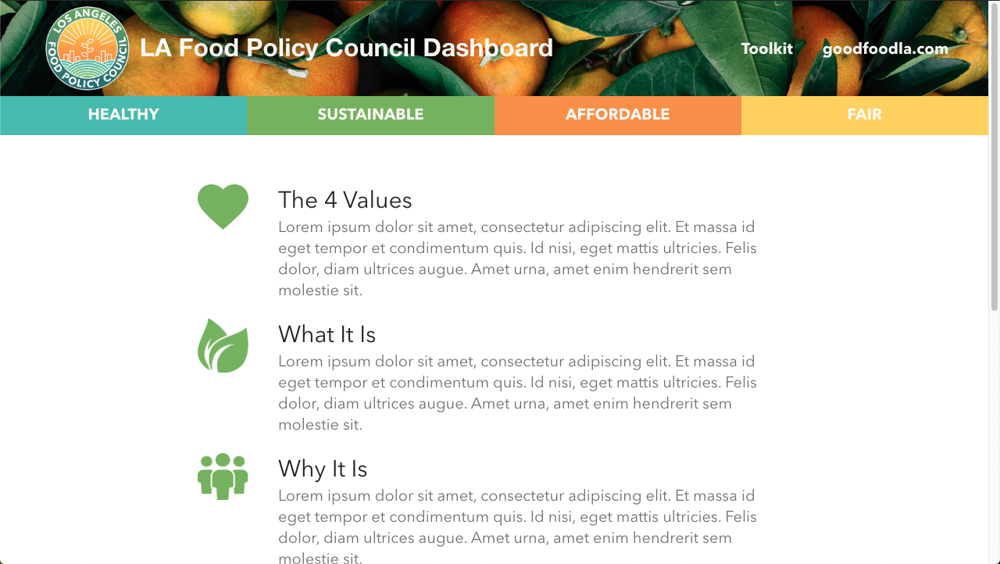
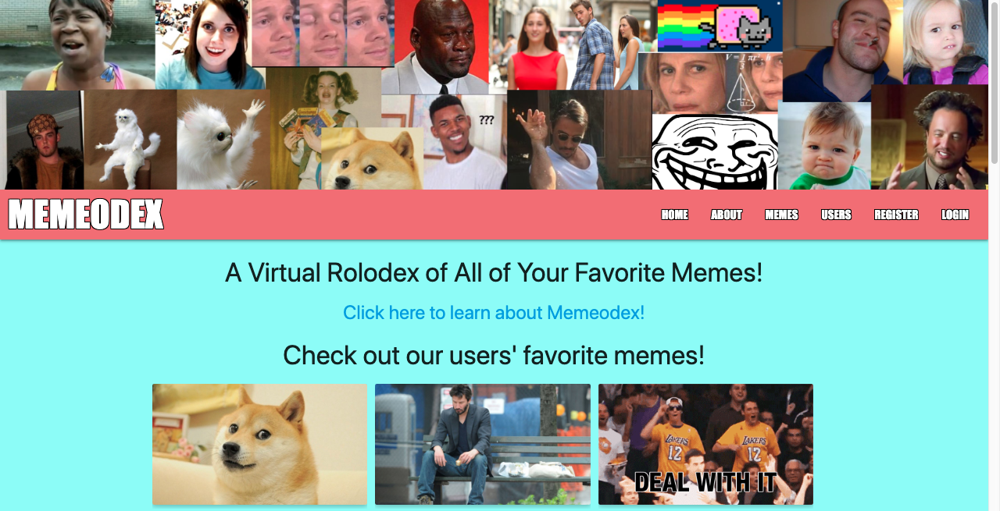

my projects
LA Food Policy Council
Food System Dashboard
"Crowd Favorite" Award-winning project
General Assembly partnered with the LA Food Policy Council (LAFPC) for a Social Impact Hackathon to create a Food System Dashboard to aggregate and display data from numerous sources for LAFPC to better serve their community in the name of "Good Food For All." After three days of around-the-clock coding, our team’s hard work paid off. Our web app won the “Crowd Favorite" Award.
Technologies
Javascript | HTML | CSS | Styled Components | React.js | Node.js | Google Firebase/Realtime Database | Google Drive | Figma
View Site View Code
Pantry Pal
An inventory tracker of all your food.
Pantry pal is a web app that allows users to keep a digital inventory of the food they have at home and track how much is left of an open item and when an item expires.
Technologies
JavaScript | HTML5 | CSS3 | Node.js | Express.js | MongoDB | Mongoose | React.js | Semantic React UI
View Site View Front-End Code View Back-End Code
Memeodex
A virtual roledex of all your favorite memes!
Memeodex is a database of internet memes curated by you, for you, to store links to your favorite memes - be it gifs, images, videos - if it lives on the internet, it can live in your database too! Any time you come across a meme you want to reference later, you store it in your database for a quick reference to that funny meme!
Technologies
JavaScript | HTML5 | CSS3 (Flexbox, Materialize) | Node.js | Express.js | MongoDB | Mongoose | embeddedJSView Site View Code
about me
I'm a full stack web developer living in Los Angeles, California. I spent 9 years in the legal industry before transitioning to computer programming. While the industries are vastly different, I've been able to apply my impeccable attention to detail, creative problem-solving strategies, and a passion for continuous growth and education to my new career. more about me ... ... less about me
I learn very quickly, I’m motivated, and have a positive attitude. I recently spent three months General Assembly (420 hours of instruction), becoming a dedicated and proficient programmer. I’ve developed several full-stack web apps, specifically using the MERN-stack, among other technologies. Most importantly, I learned how to debug, problem solve, and continue to self teach. I take pride in my work and I’m continuously looking for ways to grow as a developer and a teammate. I approach problems and tasks as puzzles that can be solved and love analyzing the different ways the pieces fit together to create a whole picture that results in a great experience for the user and for my teammates.
When I'm not programming, I'm usually found gardening, hiking with my dog, eating all the foods, traveling to somewhere new, reading a book, supporting a local sports team (go Kings go!), or riding my bike at CicLAvia!